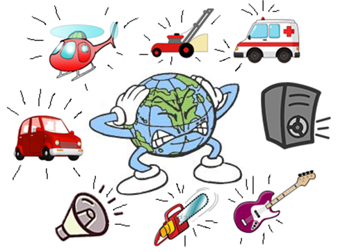
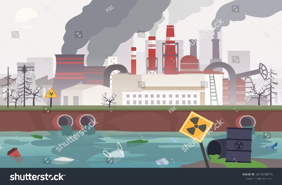
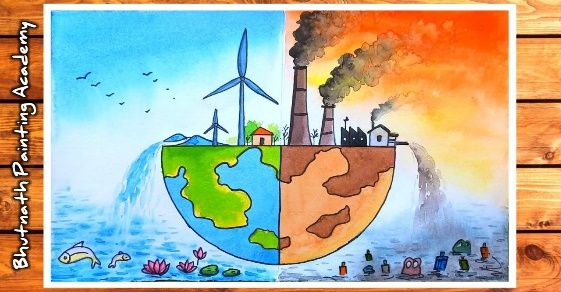
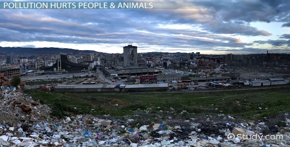
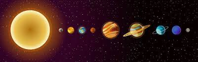
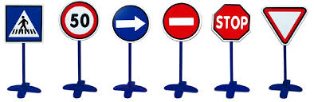
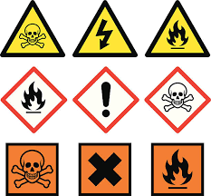
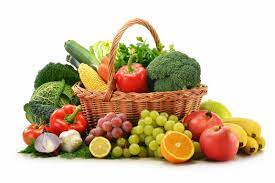
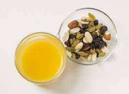

Pollution
Year 1
The teacher will instruct the learners to design a poster to show their understanding of the topic.
Group - 1 Design a Poster of different types of Pollution, Air, Land, water and Noise.
Gp – 2 Identify what type of pollution is displayed on the smart board or work sheet.
Rating code | 7 | 6 | 5 | 4 | 3 | 2 | 1 |
Description of competence | Outstanding | Meritorious | Substantial | Adequate | Moderate | Elementary | Not achieved |
Design a Poster of different types of Pollution, Air, Land, water and Noise. | 4 types of pollutions are mentioned with all accurate pictures. | 4 types of pollutions are mentioned with 3 accurate pictures. | Only 3 types of pollution with relevant pictures. | Only 2 types of pollution and 2 relevant pictures of pollution. | The poster only has 2-1 relevant pictures of pollution. | The poster was done but the pictures are not relevant to the topic. | The poster has not been done. |
Total _______________ | |||||||


Year 2
The teacher will instruct learners to design posters which will help raise the awareness to other learners to stop polluting the school environment. The teacher will also divide the learners into groups of 4 to complete the task.
Group – 1 Design a posters to warn other learners from polluting the environment.


Group -2 Cut and paste different types of Pollution and also state what type of a pollution it is.
Rating code | 4 | 3 | 2 | 1 |
Description of competence | Outstanding | Substantial | Moderate | Not achieved |
Design a posters to warn other learners from polluting the environment. | The poster has the dos and don’ts to avoid pollution. With a beautiful layout. | The poster has the dos and don’ts to avoid pollution. | Only 1 – 2 dos and don’ts with no layout. | Nothing was designed. |
Total _________________ | ||||
Space

Year 1
Gp 1 – Design and color the sun using egg trays.
Gp 2 – Design the sun using clay.
Gp 3 – Color the sun, the moon and the stars at night.
Year 2
Gp 1 – Learners will design their own planets using the egg tray
Gp 2 – will design Earth using clay
G 3 – will color the planets.
Rating code | 4 | 3 | 2 | 1 |
Description of competence | Outstanding | Substantial | Moderate | Not achieved |
Designed and color the sun/planet using gg tray or clay | The right shape with the right color of the sun/planet | Only the right shape | The design is shapeless | Nothing was designed. |
Total ____________ | ||||
Public Safety

Year 1
Gp 1 – design and paint road signs using paper plates
Gp 2 – Paint the road signs on the paper plate
Gp 3 – color the road signs
Rating code | 4 | 3 | 2 | 1 |
Description of competence | Outstanding | Substantial | Moderate | Not achieved |
Design and paint road signs using paper plates. | Road Sings are clear and painted well. | Only Road signs are clear. | The paint is not correct and appealing. | Nothing was designed. |
Total _________________ | ||||
Year 2

Gp 1 – state what the signs of danger displayed mean. Also practical and indicate whether it is a safe place to play or not.
Gp 2 – Match and color the pictures of signs that warn us of danger]
[Gp 3 – Color the safety signs
Memorandum
Fruits and Vegetables

Year 1
Gp 1 - Dry vegetables (spinach) and Fruits (peaches or grapes)
GP 2 - Squash oranges and lemons to make juice.

Year 2
Gp 1 - Design a fruits and vegetable weekly diet
Gp 2 – Design a fruit and vegetable salad using Lettice, cucumber, pineapple and Tomato